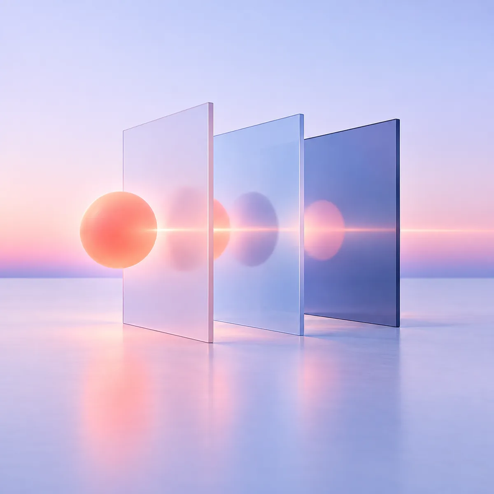
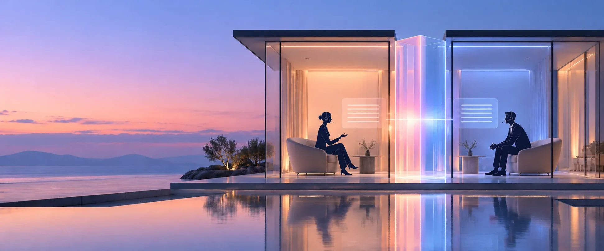

160kbps
あれば、HD品質の音声に十分です
- HD音声
- 省電力
- 限られた通信環境
わずか160 kbpsでHD品質の音声。バッテリー消費を抑え、通信環境が限られていても動作する軽量設計です。

AIリアルタイム通訳・字幕
RSI X AIは、最大遅延3秒のAI音声通訳とリアルタイム字幕を、ひとつの軽量ツールで提供します。プロの通訳者がいない会議やイベントにも、通訳者のリアルタイム支援にも。
最大遅延
人間の通訳と同程度
対応言語
リアルタイム通訳・字幕
AI通訳の課題を解決するために
AI通訳では、スピードか意味か、どちらかを選ばされがちです。訳が届くのが遅すぎれば、会話はもう先へ進んでいます。速くても意味が失われれば、別の問題が生まれます。
RSI X AIはその両方を大切にしています。ついていける速さ、理解できる正確さ、そして邪魔にならない軽さ。

音声通訳とリアルタイム字幕を、ひとつのツールで
RSI X AIは、AIによる音声通訳と、同期したリアルタイム字幕をひとつのツールにまとめました。シンプルなドロップダウンで言語を選ぶだけで、リアルタイムに聞きながら読むことができます。
字幕はあえて一度に一言語だけを表示します。利用できるすべての言語で画面が埋まることなく、すっきりと見やすいままです。
ご参加いただきありがとうございます。まず次の四半期の地域見通しから始めます。
数値で示すスピードと精度
RSI X AIは、社内のエンドツーエンド計測で最大遅延3秒を記録しています。これは人による同時通訳と同程度の遅延です。音声は100ミリ秒単位で処理され、通訳・字幕をできる限りリアルタイムに近づけます。
社内のエンドツーエンド計測による値で、人による同時通訳と同程度の遅延です。
文の終わりを待たず、音声を100ミリ秒単位で処理します。
リアルタイム通訳と字幕に対応し、画面には一度に一言語を表示します。
わずか160 kbpsでHD品質の音声を実現。RSI Exchangeと同じ軽量な基盤で、3G回線での実績もあります。

あらゆる会議プラットフォームに対応。シンプルで使いやすいインターフェース。
Zoom、Microsoft Teams、Google Meetなどのビデオ会議でも、対面の会議でも。その音声や映像をそのまま使えます。
音声を聞き取り、処理し、リアルタイムで訳します。
参加者はRSI X AIのアプリまたはウェブページで、音声通訳と字幕を利用できます。
プラグイン不要。会議にボットは参加しません。複雑な設定もありません。
国際的なチームの、実際の働き方に合わせて。
160kbps
あれば、HD品質の音声に十分です
わずか160 kbpsでHD品質の音声。バッテリー消費を抑え、通信環境が限られていても動作する軽量設計です。
多言語会議、社内ブリーフィング、国際チームの通話、そして本格的な通訳ブースまでは必要ないイベントのために。
イベントについて相談するAIの強みを活かし、重要な場面ではプロの通訳者を。
重要度がそれほど高くない会議、社内ブリーフィング、本格的な通訳ブースまでは必要ないイベントに。
01プロの通訳者のリアルタイム支援として。専門用語や数字、固有名詞を拾い上げ、判断はあくまでも通訳者が担います。
02外交や交渉など、ニュアンスと判断が欠かせないイベントには、RSI Exchangeがプロの通訳者を手配します。
03エンジニアだけでなく、通訳者がつくった
RSI X AIは、RSI Exchangeのチームから生まれました。プロの通訳に伴うプレッシャー、正確さ、責任を知り尽くしたチームです。
その経験は、製品のつくり方だけでなく、どこで使うべきか、どこで人の通訳者が欠かせないか、そしてRSI X AIが何を約束するのかにも活かされています。
RSI X AIは、プロの通訳者がいない場面や、本格的な通訳体制までは必要ない場面のために、高速なAI通訳と字幕を提供します。RSI Exchangeは、ニュアンス、トーン、判断が欠かせない重要なイベントのために、プロの通訳者を提供します。
RSI X AIは、Zoom、Microsoft Teams、Google Meetなどの会議・イベントプラットフォームの音声や映像を聞き取り、リアルタイムで処理して、通訳音声と字幕をRSI X AIアプリまたはWebページで届けます。
いいえ。RSI X AIは、元の会議プラットフォームにプラグインやボットを追加する必要がありません。
社内のエンドツーエンド計測では最大遅延3秒で、人による同時通訳と同程度の遅延です。音声は100ミリ秒単位で処理され、通訳・字幕をリアルタイムに近い状態に保ちます。
RSI X AIは、リアルタイム通訳と字幕で70以上の言語に対応しています。利用できる言語は、選択したモードやイベントの設定によって異なる場合があります。
RSI X AIは、限られた通信環境でも動作するよう設計されています。イベントの設定やネットワーク状況によりますが、HD品質の音声はわずか160 kbpsで利用できます。
有料プランの環境では、RSI X AIで処理された音声がAIモデルの学習に使われることはありません。データの保持期間は、適用されるサービス設定に従います。
会議の内容、言語、参加者、環境について教えてください。RSI X AIが合っているかどうか、一緒に確認します。
